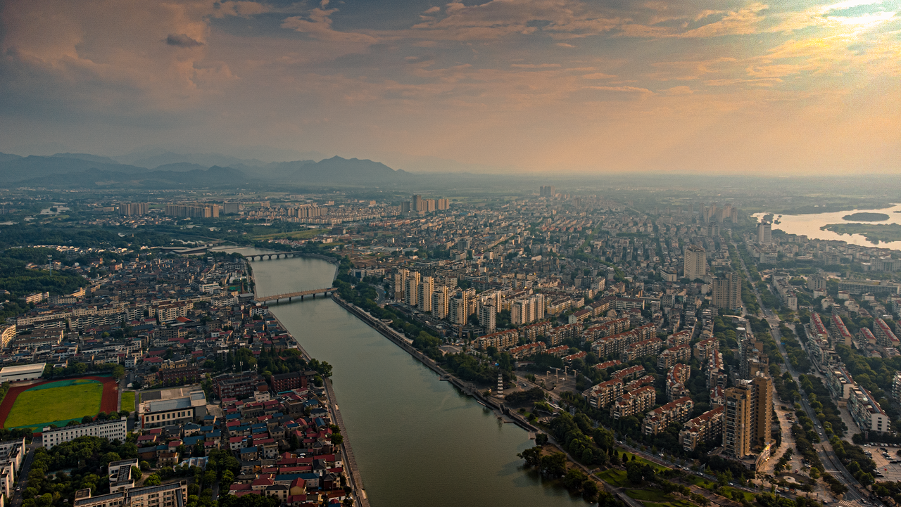
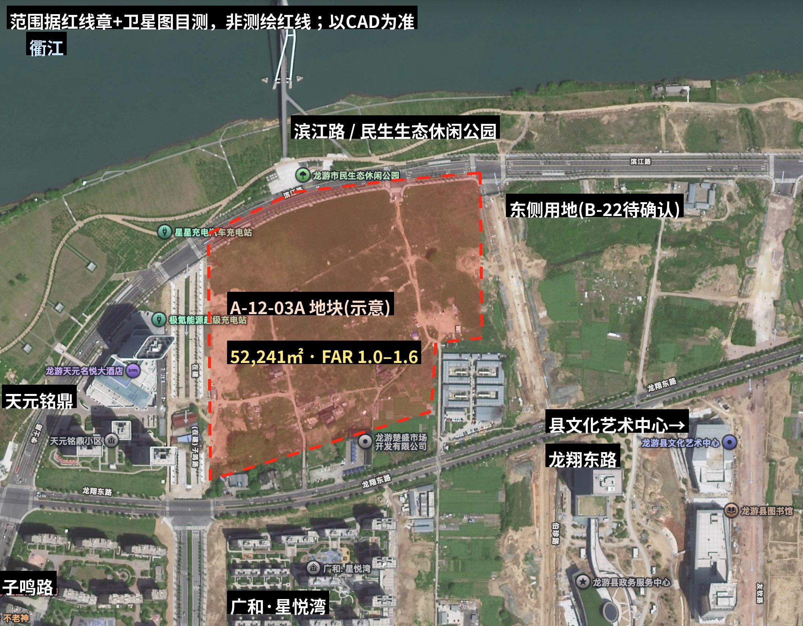
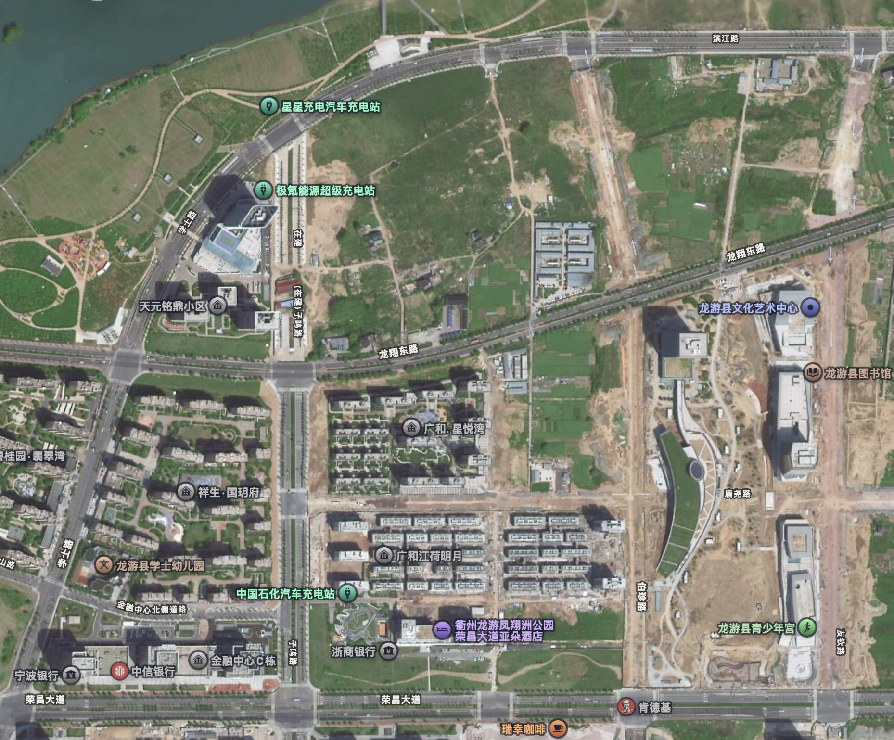
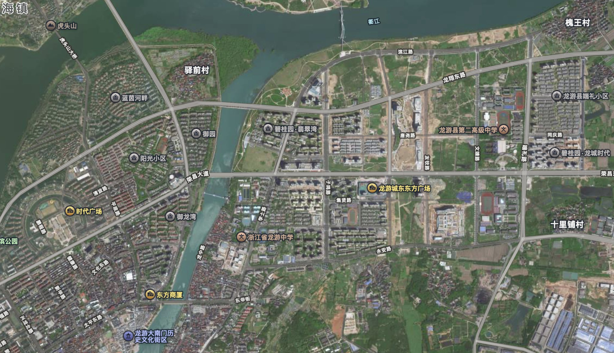
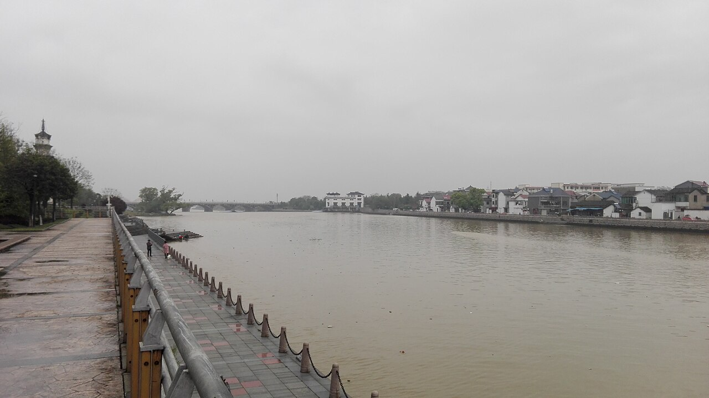
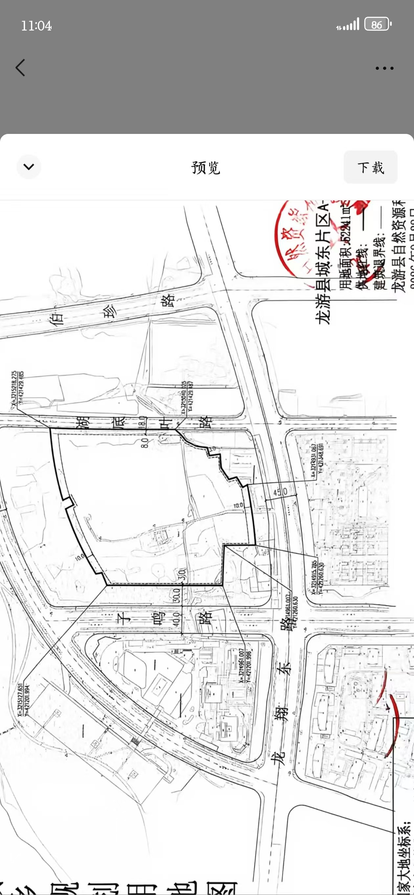

A0 · 一句话结论
- 事实地块已于 2026-10-21 以底价 3.39 亿成交（楼面价 4,054 元/㎡，溢价 0%），买方是县国资控股的龙游楚盛建设（国资平台 85% + 交投 15%）。——这不是“抢地式”的市场，是国企主导的稳健开发。
- 事实县域市场很冷：2025 全年住宅销售仅 8.77 万㎡、8.54 亿元（S1）。推断本地块计容 83,586㎡ ≈ 全县一年的住宅销售量（0.95 倍），邻地 B-22 还有约 9.6 万㎡——去化风险是第一约束。
- 建议定位建议：“衢江畔低密改善型社区”——主力 115–145㎡ 洋房/小高层 + 少量叠墅，做真正的江景与公园界面、好采光、好绿化，把广和系项目被吐槽的“密、采光差、绿化差”反过来做成卖点；价格带不追 18,000，以 12,000–15,000 元/㎡ 为验证区间（见 A7，含假设）。
- 建议文化不贴标签：用“石窟的石纹与倒斗、商帮的亦商亦儒、竹与皮纸”作内核，落到材料、色彩、院落与景观叙事（见 B 部分）。
A1 · 地块与出让条件


| 项目 | 内容 | 来源·日期 |
|---|---|---|
| 地块 | 龙游县城东片区 A-12-03A（东华街道湖底叶村，龙翔东路以北、子鸣路以东） | 规划用地图红线章（用户提供）+ S4/S5 |
| 用地面积 / 性质 | 52,241㎡ · 二类城镇住宅用地 | S4/S5 |
| 容积率 / 计容面积 | 1.0–1.6 ⇒ 52,241–83,585.6㎡ | S4/S5；按 1.6 计 83,585.6㎡（计算） |
| 限高 | ≤60m | S4（媒体报道） |
| 建筑密度 | 媒体写“规划建筑面积≤30%”，推断更可能是建筑密度≤30%，未知未见公告原文确认 | S4；邻地 B-22 公告写明 密度≤30%、绿地率≥30%（S3） |
| 成交 | 2026-10-21 · 33,886 万元 · 楼面价 4,054 元/㎡（= 33,886万 ÷ 83,585.6㎡，复算一致）· 溢价率 0% | S4（浙报传媒地产研究院）、S5（中指云） |
| 买方 | 龙游楚盛建设有限公司（龙游县国有资产经营公司 85% + 龙游县交通投资集团 15%） | S4/S5；部分页面写“龙游县城乡发展集团”，未知以工商信息为准 |
| 绿地率、起拍价、装修标准、配建、保证金 | 未知未取到 龙告字〔2026〕26号 全文 | 建议向地块买方/县自然资源局索取出让合同 |
事实同一条路对面（子鸣路以西）的 A-8 地块（现天元铭鼎）曾在 2018–2019 年挂牌文件中规定：沿龙翔东路不设底层商业、住宅底层整体架空等城市设计要求（S8：fccs 5603172 / 挂牌公告）。建议本地块虽未取到同类条文，但滨江路/龙翔东路界面、架空与开敞要求很可能延续，要在方案前向规划部门确认。
A2 · 县域数据底盘
36.7万常住人口（−0.2万）
S1 · 2025年末 · 2026-06-17
S1 · 2025年末 · 2026-06-17
57.05%城镇化率（+1.15pt）
S1
S1
358.62亿GDP（+5.0%）
S1
S1
97,452人均GDP（元）
S1
S1
54,595居民人均可支配收入（元）
S1
S1
70,870城镇居民人均可支配收入（+4.7%）
S1
S1
458.47亿住户存款
S1
S1
1,624年出生人口（出生率 4.17‰）
S1
S1
- 事实户籍人口 38.88 万，常住 36.7 万（S1）；2020 年七普常住 360,229，城镇化 51.58%（S2）。⇒ 推断人口小幅净流出、城镇化仍在爬升：客群是“县域内向城区集聚的改善需求”，不是外来大盘。
- 事实产业结构 4.3 : 40.1 : 55.6；规上工业 323 家；特种纸产值 143.4 亿、智能制造 78.82 亿、绿色食品 21.14 亿、碳基材料 31.61 亿、轨道交通 8.92 亿（S1）。⇒ 推断造纸与制造业的中产技工/管理层、民企老板是本地改善客群的基本盘。
- 事实全域旅游 752.8 万人次、63.8 亿元（S1）；建成区绿地率 41.18%，人均公园绿地 18.66㎡（S1）。
- 事实出生率 4.17‰、出生 1,624 人（S1）⇒ 推断“为孩子买房”的刚需在萎缩，新增需求更多来自“换房改善”和“两代同住/养老”。
A3 · 住房市场：量与价
升级：各竞品的总平、鸟瞰、效果图与户型图已整理在 C 竞品图集。
量（官方口径）
- 事实2025 房地产开发投资 23.15 亿，−41.6%（S1）
- 事实商品房销售面积 9.94 万㎡（+13.1%）；住宅 8.77 万㎡、8.54 亿元（S1）
- 推断按 100㎡/套粗估，全县一年约 880 套住宅；本地块按 1.6 约 83,586㎡ ≈ 830 套量级（0.95 年销量）
- 事实衢州全市 2026年1–9月 新房成交 6.8 万㎡（−59.2%），库存 58.72 万㎡，去化周期 108.1 个月（S11 摘要；未知口径是否含县区、AI生成摘要，仅作趋势参考）
- 未知龙游县自身的在售库存、去化周期、月度成交：未取到
政策（需求侧）
- 事实2026-01-30 起：购买新建商品住宅并办证，按成交价 3% 补贴，单套 ≤5 万；120㎡以上三孩家庭 +5 万、二孩 +3 万，可叠加；总额 500 万、期限 6 个月（S10，财联社 2026-02-10）；住建局通知写明 3% 补贴最晚 2026-07-29 截止，未查到延期；多孩补助至 2027-01-29（S45，详见 C8）
- 推断补贴的 120㎡ 门槛是户型设计信号：主力面积段宜卡在 120–145㎡
- 事实龙游县存量住宅用地清单显示不少项目未动工或未竣工（S6，搜索摘要，原文未取到）
地价对比：2020 vs 2026
| 项目 / 口径 | 元/㎡ | 来源·日期 |
|---|---|---|
| B-7 地块（现广和·星悦湾）2020-06 底价 | 7,288 | S4/S5 · 2020-06-12 · 溢价率12.1% · 52轮 |
| A-12-03A 本地块 2026-10 底价 | 4,054 | S4/S5 · 2026-10-21 · 溢价率 0% |
推断同一片区，楼面价 6 年下降约 44%（7,288 → 4,054）。市场不是“慢慢变冷”，而是换了一个时代。
周边在售/已售项目价格带
| 项目 / 口径 | 元/㎡ | 来源·日期 |
|---|---|---|
| 本地块地价（楼面价，底价成交） | 4,054 | S4/S5 · 2026-10-21 |
| 邻地 B-22 起拍楼面价（FAR1.4 计） | 3,884 | S3 公告 · 2026-09-29（成交结果未取到） |
| 龙游 2025 全年住宅销售均价（计算值） | 9,738 | S1 统计公报 2026-06-17：8.54亿 ÷ 8.77万㎡ |
| 御龙湾 二手挂牌（老小区） | 8,487 | 安居客 2026-10（搜索摘要，未开页） |
| 御园 二手挂牌 | 10,821 | 安居客 2026-10（搜索摘要，未开页） |
| 县域新房参考均价 | 10,837 | 安居客（搜索摘要）/ 另一站 11,775（fang.com） |
| 广和·江堤春晓 挂牌起价（现房，容积率 1.2） | 14,200 | 吉屋 2026-10-12；房天下 2025-11-23（安居客参数区另写 15,200） |
| 祥生国玥府 参考价 | 14,500 | 乐居 · 9月（年份未核，搜索摘要） |
| 广和·江荷明月 开盘报价 | 15,500 | 房产站 2022-11（交付 2024-06） |
| 碧桂园·龙城时代 参考价 | 16,300 | fang53 页面（日期未核）；另 jiwu 15,500 |
| 广和·星悦湾 参考价（已售罄） | 18,000 | fccs 参考价（日期未核）；二手挂牌约 14,700（2026-Q2，搜索摘要） |
| 天元铭鼎 参考价（已售罄） | 18,000 | 安居客 2026-H1（搜索摘要）；2020-07 开盘 13,800 起（fccs 2020-07-27） |
⚠ 以上多为挂牌/参考价，不是成交价；各站日期不一，部分来自搜索摘要。县域官方口径 2025 住宅均价约 9,738 元/㎡（S1 计算值）与挂牌 14,500–18,000 之间存在明显落差——推断挂牌价可能偏高，也可能因户型/批次结构而偏离，须实地走访核价。
竞品项目卡片
| 项目 | 位置/关系 | 产品与规模 | 价格与状态 | 评价线索 |
|---|---|---|---|---|
| 广和·星悦湾 | 龙翔东路以南，即 B-7 地块（2020-06 拍出） | 556户·15栋·13–17F；主力 95㎡，100/105㎡三房，127/132㎡四房；全精装；物业费 3元/㎡/月；容积率挂牌站写 2.0（规划 1.8） | 2021-01 开盘，2024-01-08 交付，已售罄；参考约 18,000；二手挂牌约 14,700 | fccs/搜索摘要，日期不一 |
| 广和·江荷明月 (用户地图 POI 原文“广和江荷明月”；地块 B-10，见 C8 地块核实；与江堤春晓不是同一项目) | 荣昌东路与子鸣路东北角 | 98–130㎡高层 + 143–168㎡叠墅，毛坯 | 2022-06-16 开盘，报价 15,500；2024-06-30 交付 | 网评：密度高、绿化差、部分楼层采光差（评论站，主观） |
| 广和·江堤春晓 (灵山江西岸，04-4402；不是地图上星悦湾以南的小区，见 C6) | 城南片区，飞云路南、广进路北、龙洲南路西、兴龙南路东；樾园小学东侧；隔江，距本案直线约 3–4 km（粗估） | 69,712㎡，容积率 1.2，512 户：11 幢 10–14 层高层 + 96 套 180–400㎡ 合院；户型 100/109/135/143/212㎡；车位 818；现代中式立面 | 2022-09 拿地 58,500 万；2023-06-21 取证开盘；2025-08 竣工；挂牌 14,200 起，现房在售 | 沙盘照与户型图在 C6；无效果图、无示范区实景；已售/库存未知 |
| 天元铭鼎 (用户图标注“天元铭府”) | 子鸣路以西，滨江路、龙翔东路间（A-8） | 住宅+金鼎级酒店+商业；95/105/107/168/243㎡，243㎡大平层 | 2020-07-26 开盘当晚去化约 8 成，13,800 元/㎡起；现参考约 18,000，已售完 | fccs 2020-07-27；安居客 2026-H1（搜索摘要） |
| 祥生国玥府 (用户图标注“国美府”) | 学士路 459 号 | 未取到 | 参考约 14,500（乐居，搜索摘要） | — |
| 碧桂园·龙城时代 | 荣昌大道、端礼路东北角 | 占地 69,988㎡，建面 125,978㎡，容积率 1.80；主力 175/190㎡；另有 94㎡ 等户型（不同站点不一致） | 参考 16,300（fang53）/ 15,500（jiwu） | 日期未核 |
| 碧桂园·翡翠湾 | 学士路与龙翔路交口附近，近驿前大桥 | 2018-08-27 至 09-05 交付；户型未取到 | 二手：146㎡四室毛坯挂牌 218 万（≈14,900元/㎡，计算），2025 | fccs 5344561；fclm 二手页 |
| 蓝菁河畔 · 御园 | 用户图标注 | 御园 龙洲路309号；蓝菁河畔 未知未取到 | 御园二手挂牌 ≈10,821（2026-10，安居客摘要） | — |
推断竞品共性：主力 95–132㎡ 的三/四房高层，叠墅 143–168㎡；缺口是“真正低密、近江、有院/有景观边界”的 120–145㎡ 洋房，以及对老人友好、可两代同住的户型。推断这与本地块“低密度+近公园+近文化教育设施”的禀赋对得上。
推断江堤春晓给本案的两条参照：①它是容积率 1.2、低层合院居内、高层压边的“低密 + 现代中式”产品，现房挂牌 14,200 起，百米到 143㎡ 的总价带 156–207 万，说明对岸老城区也有人接受这个价位（但已售和去化未知，不是热销证据）；②立面上它用“高层现代（格栅/铝板/大玻璃）+ 低层与门厅中式”的分工，与 D 页策略同向。详见 C6。
竞品销售数据汇总（详表与来源见 C8）
| 项目 | 开盘 | 批次 / 规模 | 备案价 · 挂牌 · 成交（元/㎡） | 去化 / 库存 | 促销 | 交付 |
|---|---|---|---|---|---|---|
| 星悦湾 | 2021-01-01 | 556 户；批次未知 | 备案 18,000；待售 17,500（2024-06）；二手挂牌 14,700（2026-Q2）；成交未知 | fccs 售完；库存未知 | 未知 | 2024-01-08 |
| 江荷明月 | 2022-01-08 首开（2022-06 第二批证） | 22 栋、约 580 套 | 首开 15,500；二手挂牌约 13,769（2026，1 套）；备案、成交未知 | 两站冲突（售完/在售）；库存未知 | 未知 | 2024-06-30 |
| 天元铭鼎 | 2020-07-26 | 住宅 307 套 | 首开 13,800 起；参考 18,000（2025-07～2026-06）；备案、成交未知 | 开盘当晚称销 8 成；现售罄 | 未知 | 2022-01/11（两站不一） |
| 祥生国玥府 | 2018-09-08 | 993 户 | 宣传 15,000（2018）；二手挂牌 124/139㎡ ≈ 11,800–13,600（2026-03～09）；备案、成交未知 | 售罄；二手挂牌量大 | — | 2021-06-30 |
| 龙城时代 | 2021-06-04 | 首证 5 / 25 栋；996 或 1,040 户 | 开盘 16,300；2026-06-09 约 16,500；备案、成交未知 | 在售；已售、库存未知 | 有“特价房”专栏，折扣未知 | 预计 2024-06，是否已交未知 |
| 江堤春晓（C6） | 2023-06-21（首证 ZJ00031，6 幢 244 户） | 512 户（416 + 96 合院）；后续批次未知 | 首开约 15,000（2023-06）→ 13,800（2025-09）→ 14,200（2026-10）；备案、成交未知 | 在售（现房）；109㎡ 标售完；首开宣传“热销 3 亿”（宣传口径）；已售、库存未知 | 未知 | 2025-08-01 竣工；6 栋 2025-08-29 交房；整盘预计 2025-12-31 |
| 龙游公馆（翡翠湾？）· 御园 · 蓝菁河畔 | 未知开盘、批次、备案价、去化均未取到；仅有二手挂牌：翡翠湾/龙游公馆 146㎡ ≈ 14,900（2025）、御园 ≈ 10,821（2026-10）。 | |||||
⚠ 成交价、去化率、剩余库存没有一个项目取到可核的数；官方一房一价站点本次访问失败。上表“备案”仅为 fccs 页面写法，不是我在官方站核过。推断二手挂牌比首开价低 10–21%，对本案是压力信号（详见 C8）。未知3% 购房补贴最晚 2026-07-29 截止，未查到延期（C8）。
A4 · 区位与 SWOT




| 优势 S |
事实紧邻滨江路与民生生态休闲公园，隔路望衢江；凤翔洲景观云桥（2020-07，全长 1,935m）桥头；凤翔洲水文化公园约 40 公顷、张唐景观设计、2023 年开放，可步行抵达北岸竹林禅寺与龙游石窟方向（S13） 事实县公共文化服务中心（188 亩，建面约 16.99 万㎡，含文化艺术中心、青少年宫、政务服务；2020-04 开工）与政务服务中心就在东南侧（S6/用户卫星图） 事实低密度政策空间：限高 60m、密度（疑）≤30%；用地方正，约 52,241㎡ 事实地价低（4,054），产品有“做好”的空间 |
|---|---|
| 劣势 W |
事实地块目前周边仍多空地与施工场地（卫星图），成熟度低、生活配套（商业）待建 推断在售/已售项目已把“滨江”叙事用过一轮（天元铭鼎、星悦湾），差异化需靠产品而非概念 未知防洪标高、场地高程、噪声（龙翔东路、滨江路）未知，需测绘与水利资料 |
| 机会 O |
事实“一县三站”：龙游站（沪昆高铁）到杭州东最快约 1 小时；龙游北站（杭衢高铁）2025-12-26 开通，杭州西最快约 59 分钟（距县城约 15km）；龙游南站（衢宁）（S7/搜索） 事实2026 购房补贴（S10）；推断国资开发主体利于做长期品质、可接受较低利润换口碑 事实学区：2023 年学区调整后，城东新区多属阳光小学（范围含滨江路—文靖路—永安路—城南路—315省道一带）或端礼小学（S12）；未知本地块具体划入哪所须向教育局核实；浙江省龙游中学（学士路288号）、龙游二高在城东（S6/搜索） |
| 威胁 T |
事实需求端：人口净流出、出生率 4.17‰（S1）；开发投资 −41.6%（S1） 推断供给压力：本地块 83,586㎡ + 邻地 B-22 约 95,976㎡（S3）≈ 两年多的全县住宅销量 推断挂牌 14,500–18,000 的“价格锚”与官方均价 ~9,700 之间的落差，会造成客户心理价位不稳 |
A5 · 目标客群
| 客群 | 依据 | 产品含义 |
|---|---|---|
| 县城+乡镇的改善型家庭（主力） | 事实城镇化 57%，城镇居民人均可支配 70,870（S1）；推断两口收入约 14 万/年的家庭是改善主体 | 115–145㎡三/四房，南北通透，双阳台，收纳；总价 ≈ 140–200 万区间（计算：12,000–15,000 × 115–145㎡） |
| 多孩家庭 | 事实120㎡+ 三孩补 5 万、二孩补 3 万（S10） | 做 120–135㎡ 的“4房 + 可变空间”，补贴门槛之上 |
| 两代同住/养老 | 推断出生率低而户籍>常住，老龄化倾向； | 一层带院/架空花园的洋房，电梯到户，适老动线，老人房带卫 |
| 造纸/制造业企业主与管理层、公职与教育医疗人群 | 事实特种纸、智能制造规上产值（S1）；毗邻政务、文化、教育设施 | 叠墅/大平层 150–180㎡ 少量，作为品牌高度与价格标杆 |
| 返乡人群 / 杭州—衢州高铁通勤 | 事实龙游站到杭州东约 1 小时（搜索） | 建议小户型不是重点；强调“归家”的品质叙事与社区公共空间 |
A6 · 产品建议（容积率 1.6）
- 事实几何约束：用地 52,241㎡；计容 ≤83,586㎡；密度若 ≤30% ⇒ 首层投影 ≤15,672㎡；⇒ 全地块平均层数 ≈ 1.6÷0.3 ≈ 5.3 层（计算，在密度顶格时）。
- 建议建议配比（计容面积占比，用于首轮体块试算，非定论）：洋房 6–9 层 ≈ 45–55%；小高层 11–15 层 ≈ 30–35%（沿北侧/东侧，退让出江景与公园视线）；叠墅/下叠上叠 4–5 层 ≈ 10–20%（靠南/靠景观边界）。
- 建议户型：核心 118–135㎡（四房、可变），补贴门槛之上；叠墅 150–170㎡带庭院/露台；不做 90㎡以下。
- 建议规划要点：南低北高、围合院落、楼间距大于规范；中心景观引入“石窟水院”“竹径”；沿滨江路退让做公共界面（呼应 A-8 的架空与不设底商要求，待确认）；会所与社区客厅靠公园侧，给老人与儿童。
- 建议对标反面清单：广和系被吐槽的“高密度、绿化差、采光差”（评论站，主观）——反向设计即卖点。
A7 · 定价逻辑（含假设）
| 项 | 低情景 | 高情景 | 性质 |
|---|---|---|---|
| 地价（楼面价） | 4,054 | 4,054 | 事实S4/S5 |
| 建安成本（含精装）元/㎡ | 4,500 | 6,500 | 推断假设，须造价咨询确认 |
| 财务、销售、管理、税费等（按 15%） | ×1.15 | ×1.15 | 推断假设 |
| 盈亏平衡价（元/㎡） | ≈ 9,840 | ≈ 12,140 | 计算 = (4,054 + 建安) × 1.15 |
- 推断若盈亏线在 ~9,800–12,100，而官方全县均价 ~9,700，挂牌 14,500–18,000 只在少数高品质已售项目上成立；本项目要卖得动，价格宜落在 12,000–15,000 区间验证，靠“江景公园界面 + 低密 + 精装/可选装”拉出溢价。
- 建议若开发方以国资稳盘、保本微利为目标，可用较低利润换去化速度；未知利润目标由甲方决定。
- 建议分批策略：先推 洋房 + 小高层 的景观位，叠墅/大户型压后，避免一次性冲击县域的价格锚。
A8 · 定位语与口号候选
定位语（建议）：衢江畔的低密改善型社区——以龙游的“石、竹、纸、书”为精神内核，做一个让龙游人愿意把下一个十年交付出去的家。
口号候选（建议，供选）：
口号候选（建议，供选）：
- 江在门前，书在心里。
- 龙游石窟之下，一座会呼吸的院子。
- 亦商亦儒，是为家。（呼应龙游商帮“亦商亦儒”）
- 竹有节，家有院。
- 住进衢江边的读书声。（呼应 徐伯珍/余绍宋/童珮 的读书与藏书传统）